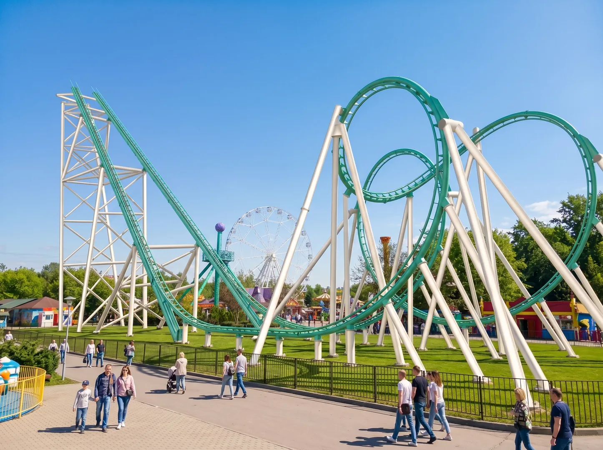
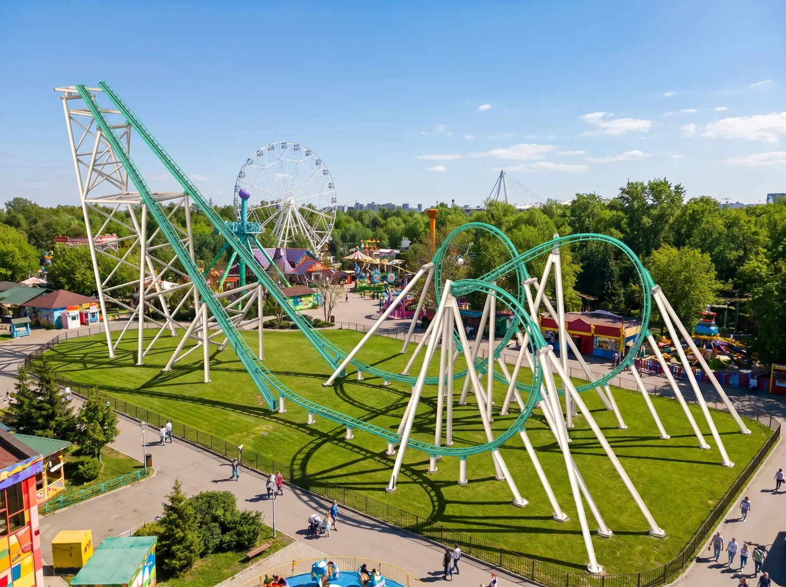
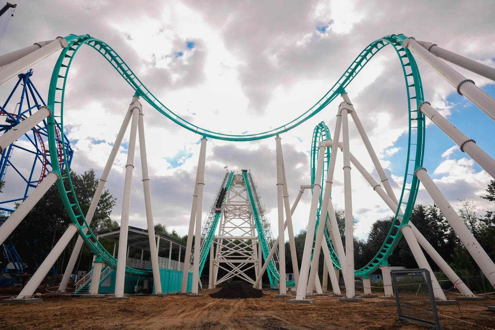

Подъем на 37 метров
Парк остается внизу, а впереди уже видна дуга трассы.
1 августа · открытие новой экстрим-зоны
Дрим Райдерс
Главный аттракцион зоны — «Бумеранг»: первая в парке трасса с мертвой петлей 360°, подъемом на 37 метров и разгоном до 85,3 км/ч.
Night Riders были про ночной парк и огни. Dream Riders — про дневной заезд, когда перед глазами весь маршрут: взлет, полный оборот и возвращение на платформу с ощущением, что пора еще раз.
Премьера: новый аттракцион открывается 1 августа.
Герой дня: «Бумеранг» с первой петлей 360° в парке.
Материалы: фото, видео и афиша встанут в готовые блоки.
Парк остается внизу, а впереди уже видна дуга трассы.
Полный оборот, который превращает премьеру в главный заезд дня.
Резкий финишный импульс, ради которого хочется вернуться в очередь.
Главная дата запуска — 1 августа. Сюда добавим точное время старта.
Кнопку свяжем с оплатой, лендингом парка или билетным виджетом.
Покажите билет на входе и отправляйтесь к новой трассе.
Пока используем временные материалы: видео с трассой, дневные виды и крупный кадр петли. После финальной съемки заменим файлы в assets.



Этот блок готов под цену, возрастные ограничения, расписание открытия и ссылку на оплату. Пока кнопка ведет как плейсхолдер.
Адрес, координаты, парковку и схему входа можно оставить как на сайте парка или уточнить под конкретную точку входа к новому аттракциону.
Построить маршрутАдрес: Москва, Зеленое кольцо, 18
Телефон: +7 (495) 133-65-56
Дата: 1 августа, дневная программа
Dream Riders / «Дрим Райдерс» — дневная премьера нового аттракциона «Бумеранг» в Парке Сказка.
Это первая в парке трасса с мертвой петлей 360°, подъемом на 37 метров и скоростью до 85,3 км/ч.
Открытие запланировано на 1 августа, днем.
Ссылка на покупку пока стоит плейсхолдером. Ее можно заменить на страницу оплаты или билетный виджет.
Внизу — схематичная 3D-модель: бирюзовая трасса, опоры и вагончик, который проходит петлю. Это можно развить в полноценную интерактивную сцену.